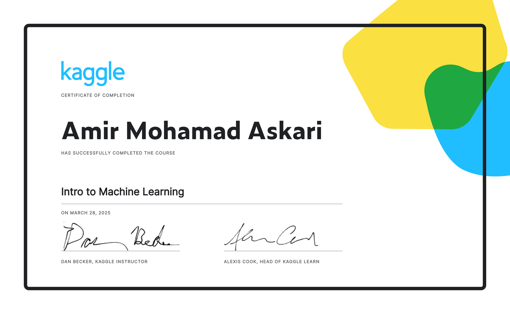

What I learned
I used this Kaggle track as a hands-on practice layer. The value was the fast loop: read a concept, run code in a notebook, complete exercises, and turn the idea into practical data-science muscle memory.
This was one of the first applied ML bridges from theory to real datasets. It introduced the flow of selecting data, training a model, validating performance, and making predictions.

I used this Kaggle track as a hands-on practice layer. The value was the fast loop: read a concept, run code in a notebook, complete exercises, and turn the idea into practical data-science muscle memory.
On the Education page, Kaggle is not treated as a separate research archive. It is the bridge between courses and real projects: notebooks, datasets, small exercises, and experiments that helped me become faster with applied AI work.
Kaggle appears here as a fast practice environment where I turned small lessons into notebook habits, data intuition, and repeatable workflow skills.
This was one of the first applied ML bridges from theory to real datasets. It introduced the flow of selecting data, training a model, validating performance, and making predictions. The value was the repetition: small exercises, immediate feedback, and a notebook workflow that later made larger datasets less intimidating.
These are the skills I associate with this Kaggle item in the Education page, without turning it into another project portfolio entry.
I used this Kaggle track as a hands-on practice layer. The value was the fast loop: read a concept, run code in a notebook, complete exercises, and turn the idea into practical data-science muscle memory. I used the exercises to build speed and confidence, then reused those habits when moving into competitions, EDA, feature engineering, and applied ML notebooks.
On the Education page, Kaggle is not treated as a separate research archive. It is the bridge between courses and real projects: notebooks, datasets, small exercises, and experiments that helped me become faster with applied AI work. Detailed competition work stays on the Research page; this tab explains Kaggle as part of the learning path.